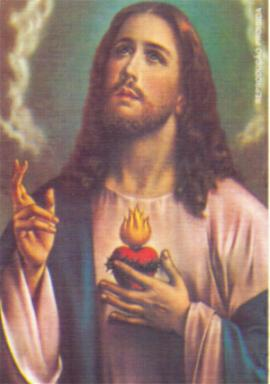
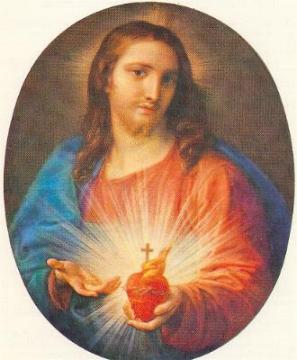
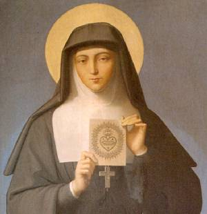

A POSTULANTE
O Mosteiro de Paray foi fundado no dia 4 de Setembro de 1626 e coincidentemente, numa primeira sexta-feira do mês! Em 1671, era governado pela Madre Marguerite Hieronymus Hersant que fez a sua profissão de fé no primeiro Mosteiro da Comunidade, em Paris. Como aquela sábia Superiora tinha um espírito sublime no amor de DEUS e muito discernimento para a condução das almas, ela sabia, desde o início, que Margarida Alacoque era "uma menina de escolha do SENHORâ€.
O mesmo julgamento foi feito pela Mestra das Noviças, Irmã Anne-Franãoise Thouvant, que foi a primeira a ser admitida logo após a fundação do Mosteiro de Paray. Estas duas grandes religiosas compreenderam com lucidez que a nova Postulante já tinha recebido do próprio DEUS, os ensinamentos mais profundos e necessários a todos que querem acolher o Amor Divino e seguir a vida religiosa.
Mas, na sua humilde simplicidade, Margarida imaginava que não sabia rezar e modestamente foi suplicar a Mestra das Noviças para lhe ensinar. A Irmã Thouvant se contentou em responder-lhe: "Vai se colocar diante de NOSSO SENHOR como uma tela na frente de um pintor". Irmã Margarida obedeceu e o Salvador lhe deu ao mesmo tempo a dupla compreensão deste acontecimento e do mistério que ele significa, lhe revelando que a sua alma era a tela sobre a qual, ELE queria pintar todos os caminhos de sua vida sofredora.
Se quisermos ter uma idáia das operações secretas da graça na alma dos predestinados, desde os seus primeiros dias de vida religiosa, ela mesma vai nos dizer, sem dávida, da sobrenatural beleza de sua linguagem: "Eu me despojei de tudo neste momento, e depois, com o meu coração vazio e a minha alma nua, fui iluminada por um ardente desejo de amar e sofrer, que não me deixava descansar, me perseguindo de tão perto, que eu não tinha tempo livre nem para pensar como eu poderia amar me crucificandoâ€.
A humilde Postulante entrou no Mosteiro na terça-feira, dia 25 de Agosto de 1671, festa de São Luís, Rei de França, e logo ficou muito feliz em vestir o santo hábito. Para o nome de religiosa ela escolheu acrescentar ao seu, o nome da MÃE DE DEUS, "MARIA". Assim, o seu nome ficou Irmã Margarida Maria Alacoque.
Como os Superiores a observava sempre perdida em DEUS, eles quiseram se assegurar da natureza do espírito que a conduzia. Para isso, foi retirado dela todos os exercícios espirituais, mandando que ela realizasse as mais modestas funções do Mosteiro. Ela fazia tudo serenamente e feliz, todas aquelas pequenas tarefas, cantando pequenos e ingênuos versos, que dedicava a JESUS.
Um ato de generosidade feito pela Irmã Margarida, num encontro muito difícil por causa de sua natureza, lhe valeu um acréscimo de dádivas nos favores do SENHOR. O fato é simples, tão simples, que chega a surpreender. Mas ele mostra o modo de DEUS atribuir valor às pequenas coisas feitas com amor.
Ela sempre teve uma grande aversão por todos os tipos de queijo. Era um cacoete de famélia, porque também o Crisóstomo, seu irmão, não comia. Por isso, quando ele foi apresentá-la no Mosteiro, avisou as Irmãs recepcionistas, que estava rezando para ninguém lhe obrigar a comer queijo, porque era um embaraçoso alimento para ela. Mas um dia, por equívoco, a servente no refeitório apresentou o queijo a Irmã Margarida! Educadamente rejeitou. A Mestra das Noviças vendo, acreditou que era uma boa oportunidade para medir a coragem de sua discípula. Obrigou Margarida a fazer o sacrifício de pegar o queijo e comê-lo por NOSSO SENHOR. De início, a natural repulsa vence qualquer sentimento. Ela não se animou a enfrentar o queijo. Abaixou a cabeça e ficou em silêncio. Mas a Madre vendo, interveio e não permitiu que a pobre Irmã fosse mais longe com a sua negativa e obedecesse, dizendo-lhe: "Vamos! Eu lhe proíbo de rejeitar o alimento que lhe é oferecidoâ€. Ela humildemente com os olhos no chão, chorou. E ainda ficou três dias lutando entre o querer e o não querer vencer a sua própria resistência. Não sabendo o que fazer, ajoelhou-se diante do SANTÍSSIMO SACRAMENTO e expôs a sua angústia: "Ai! Meu Deus, o SENHOR me abandonou!â€
O DEUS de bondade ouviu a reclamação de sua filha e a consolou, dando-lhe força para vencer a sua repugnância ao queijo. Assim, Margarida com um esforço indescritível continuou a servir-se de queijo, cada vez que era oferecido na Comunidade, até que um dia, alguém se sentiu na obrigação de defendá-la.
Em outra ocasião, ela sentiu uma grande revolta interior por um acontecimento na Comunidade: parecia a derrota de sua força pessoal. O Salvador mostrou-lhe então o Seu Divino Corpo, coberto de chagas que ELE tinha sofrido pelo Seu Amor. Então JESUS lhe censurou a sua ingratidáo e a sua covardia que não conseguia se dominar pelo amor que devia ter a ELE. "O que Vós, meu DEUS, quer que eu faça, pois minha vontade é mais forte do que euâ€? ELE disse, se ela entrasse na chaga do Seu Lado Sagrado, não teria mais desgosto e aflições a superar. "Ó meu Salvador", exclamou ela, "me feche em Vossa chaga para que nunca mais eu faça isso..." Disse Margarida: "A partir daquele momento, tudo me parecia tão fácil que nada mais foi difícil para superar".
A NOVIÇA

É muito provável que, quando o Divino Mestre lhe fez esta confidáncia, a Irmã Margarida Maria, não podia compreender como a infinita santidade de DEUS foi incidir o Seu olhar sobre ela para tal ato de expiação. Outras pessoas eram mais próprias e tinham qualidades para preencher o requisito Divino. Mas NOSSO SENHOR insistiu e sua voz assumiu o tom de comando:
- "EU não quero fazer outras como você, e EU quero que você consinta o Meu desejoâ€. Ela alegou que dependia da obediência das Regras do Mosteiro. Pretexto inútil diante DAQUELE que tem a humanidade em sua mão...
ELE inspirou a Irmã Superiora aprovar o que ELE pediu a sua serva. Agora ela já não podia fugir a solicitação Divina.
O tempo de seu Noviciado estava chegando ao final e ela se viu submetida a novos ataques do maligno. Nós não poderíamos negar as suas virtudes, que eclipsava sem a menor dávida, o comportamento das suas companheiras. Mas as vias extraordinárias que aquela jovem Irmã transitava não deixavam de causar ciúmes entre as demais. No Mosteiro da Visitação, onde os Santos fundadores não queriam nada que atraísse as atenções, como iam permitir uma pessoa como esta, que estava sempre em evidáncia, na verdade, independentemente da vontade dela! A Comunidade não tinha ilusões sobre as comunicações íntimas e constantes da Irmã Margarida com NOSSO SENHOR. Eles acreditavam, sem dávida. Mas o ciúme era muito maior e sempre existiu. Por isso, a própria Comunidade solicitou que, pelo menos, seria necessária uma transferência da data, para a aceitação definitiva da Irmã Alacoque na Comunidade. Assim, a sua Profissão de Fé foi suspensa. Como era natural, a Noviça sofreu aquela abominável decepção ao receber a notícia e não conseguiu dizer nenhuma palavra. Como não estava em seu poder deter o curso das coisas sobrenaturais que aconteciam, triste e angustiada disse a NOSSO SENHOR: "Ai meu DEUS, então o SENHOR é a razão de alguém não me aceitar como membro da Comunidade Religiosaâ€?
A JOVEM PROFESSA
ELE respondeu:
"Diga a sua Irmã Superiora que ela não tenha receios de receber você, que EU respondo por você, e se ela exigir fiança, eu serei a sua caução".
Esta palavra Divina ficou como um testemunho irrecusável de apelo em favor de Margarida Maria. De toda a eternidade, o CORAÇÃO DE JESUS tinha escolhido o Instituto fundado por São Francisco de Sales e Santa Joana de Chantal para incrustar a sua escolhida. Mas o Soberano SENHOR tomou o cuidado de preveni-la que deveria seguir perseverantemente a Regra, e que ELE Mesmo, naquele lugar, acomodará as Suas Graças. Desse modo ela deverá viver o espírito dos fundadores, mas os favores de seu Divino Esposo vão se aprofundar nela sempre mais, não sendo removidos jamais.
Neste ano 1672, foi a Madre Marie Franãoise de Saumaise, professa no Mosteiro de Dijon, que veio para o Governo da Comunidade de Paray Le Monial. Como conseqüência natural, a esta nova Superiora, nossa Santa passou a relatar as palavras do Salvador e todos os acontecimentos sobrenaturais. A Madre de Saumaise era uma pessoa com grande poder de julgamento e de alta santidade e por isso, exigiu de Margarida uma prova: ordenando-lhe pedir a NOSSO SENHOR, torná-la útil a santa religião, pela prática exata de todas as observâncias monásticas.
O SENHOR sempre repleto de condescendáncia, respondeu a Noviça: "Bem! Minha filha, EU vou lhe dar tudo isso porque quero fazer-lhe útil a religião, mas de uma forma que ainda é conhecida apenas por MIM. De hoje em diante adornarei minhas graças ao espírito da sua Regra, a vontade dos seus superiores e por causa de sua fraqueza. Desse modo, deve ser retirada qualquer coisa suspeita para a correta prática de sua Regra, a qual EU vejo que você prefere a todo o resto. Além disso, estou contente que você gostou da vontade de seus superiores em relação ao que ME pertence, então eles deverão ajudá-la naquilo que EU ordenar. Deixe-os fazer tudo aquilo que eles querem de você: EU saberei encontrar o meio para os Meus desígnios terem bom êxito, mesmo com maneiras que poderão parecer contrárias e opostas. EU não ME reservo à conduta de teu interior e particularmente de teu coração, mas, sem a qual, tendo estabelecido nele o império de MEU puro Amor, EU não o cederei jamais a ninguémâ€.
A Madre de Saumaise não teve mais dávida de atender a uma resposta tão precisa e tão explícita. Ela ficou contente. Por outro lado, durante os seis anos que permaneceu como Superiora da Ordem em Le Monyal, teve a oportunidade de conhecer as verdadeiras predições que NOSSO SENHOR tinha feito a Margarida e que esta lhe transmitiu com grande simplicidade, nos dias de Noviciado.
Assim, a Superiora e a Mestra das Noviças não duvidaram mais da vocação de Margarida Maria, e a Comunidade não demorou a demonstrar que compartilhava do mesmo sentimento. Ela foi recebida pela Comunidade inteira para a sua Santa Profissão de Fé.
A cerimônia foi realizada no domingo dia 6 de Novembro de 1672. Segundo o costume da Ordem, este ato importante devia ser precedido de um Retiro Espiritual ou Isolamento em local ermo, durante 10 dias.
Irmã Margarida Maria fez a sua profissão de fé conduzida pelo ESPÍRITO SANTO. As impressionantes provas lá estão. A Noviça possuía nela mesma, AQUELE que ela amava mais do que a si mesma, e por isso, pouco se importava de ser utilizada em qualquer serviço ou função, visto que nada a desviava DELE. Um acontecimento ficou célebre.
Havia na área do Mosteiro uma jumenta e um asno. A Mestra das Noviças tinha recomendado (a todas as Noviças) que vigiassem, para que os animais não fizessem ruínas na horta do jardim. Irmã Margarida acolheu a recomendação como se fosse uma ordem pessoal a ela, e não imaginou que estivesse dispensada desta vigilância, quando chegou o dia de começar o Retiro para fazer a sua Profissão de Fé.
Ao longo dos dias, fora dos exercícios do coro, ela reencontrava a doce infância com sua notável humildade, desenvolvendo um penoso trabalho “por motivo da ordem recebida†de vigiar e não prender os animais. Os animais gostaram da presença da Irmã, e ela disse: “só me fizeram correr pelo campo o dia inteiroâ€, escreveu ela inocentemente, e completou “Eu só tinha tempo para descansar na hora do Ângelus à tarde, quando vinha cear. Não era fácil vigiar aqueles dois animais peraltas.â€
Em outra ocasião, como parte de suas funções, durante uma parte da manhã, ela devia retornar ao estábulo para alimentar a jumenta e o pequeno asno. Dizia: “Eu me encontrava tão contente nesta ocupação, que nem me importaria se ela durasse toda a minha vidaâ€. Todavia, ALGUÉM, não deixou lá a Irmã Margarida durante toda a sua vida, mas somente um tempo necessário apenas como teste de observação, para ver até onde ia a sua perseverante virtude. Um dia, porém, querendo impedir os animais de fugir, Irmã Margarida quis interromper a conversação que mantinha com NOSSO SENHOR. ELE disse: “Deixe-os, não se preocupe, eles não farão nada de malâ€. Ela obedientemente respeitou à palavra de seu DEUS. Entretanto, as outras Irmãs que perceberam os animais desfilando pela horta, ficaram afobadas e correram por todos os lados, espantando os animais para outra direção. Depois realizaram uma minuciosa busca, mas na verdade, elas não encontraram nenhum estrago e nenhum vestígio da passagem dos animais pela horta.
É tradição de todos os que visitam Paray Le Monial, passar naquele local, embaixo de um pequeno bosque de aveleiras, que ainda se vê florescer no jardim do Mosteiro, porque foi lá, aonde o Divino Mestre apareceu à feliz Noviça.
Mostrando um dia este bosque a uma Irmã, Margarida disse: “Eis ali um lugar de graças para mim, porque DEUS me fez conhecer aqui o benefício que existe no sofrimento, pelos conhecimentos e luzes que ELE me deu de sua Paixãoâ€.
O exame atento de certas circunstâncias autoriza a dizer que durante o seu Retiro da Profissão de Fé a Irmã Margarida Maria recebeu uma graça especial que ficou denominada, “um dia de Toussaintâ€. A graça foi mencionada, mas de modo inteligível. Isto nos permite dizer: que sua alma devia ser pura de toda e qualquer mancha. Ela devia permanecer abandonada a AQUELE que é a própria Virtude. No Céu, nada passa tudo é eterno e se consome no amor.
NOSSO SENHOR colocou diante dos olhos dela tudo aquilo que ela teria de sofrer no curso de sua vida. Para exprimir a sua expectativa, a Santa tem uma palavra: “Todo o meu corpo estremeceuâ€
Devendo se
preparar para a sua Confissão Sacramental, ela estava com grande ansiedade
buscando mentalmente definir os seus pecados. Seu Divino Mestre lhe
tranqüilizou:
“Porque está atormentada? 
Repleta de humildade, fez a sua Confissão. A Irmã Margarida Maria descreve o que se passou em sua alma, sob a aplicação do Sangue Redentor.
“Parecia-me ver e sentir: eu estava despojada e revestida ao mesmo tempo de um vestido branco. Ouvia as palavras do SENHORâ€: “Aqui está à veste da inocência com a qual vou revestir a sua alma, a fim de que você não viva senão da vida do Homem-DEUS, ou seja, que você viva como se não vivesse mais, ME deixando viver em você. Porque EU sou a sua vida, e você não viverá mais que em MIM e por MIMâ€
Aquele vestido caracterizava a inocência, porque o SENHOR sendo zeloso, queria aquela virtude em Sua bem amada. Ela narra, em outro escrito, as palavras de seu Soberano: “EU, Seu Esposo, Seu DEUS e Seu Amor, minha bem amada, EU venho para revestir a sua alma com o vestido da inocência, a fim de que você viva somente da vida do Homem-DEUS, e por isso, EU simplificarei e purificarei todas as suas virtudes, a fim de que elas não recebam mais nenhuma impressão estranha. É na presença da SANTÍSSIMA TRINDADE e de minha SANTA MÃE que lhe faço esta graça, a qual se você um dia vier a perdá-la, não irá recuperá-la jamais, e precipitarás num abismo tão profundo por causa do lugar elevado onde EU lhe coloquei que é a Chaga de Meu CORAÇÃO, que não poderá jamais se erguer desta quedaâ€.
No dia dos Mortos, 2 de Novembro de 1672, ela se prostrou na presença do SANTÍSSIMO SACRAMENTO para fazer um pedido de perdáo de abuso de suas graças, que ela tinha cometido. Então, se imolou, pela vontade Divina, e rezava suplicando a NOSSO SENHOR receber o sacrifício de unir o dela ao sacrifício que ELE fez. O Divino Mestre respondeu-lhe:
“Recorde-se que é um DEUS crucificado que você veio desposar. ELE lhe fará desempenhar conforme a vontade DELE. Assim, você deverá dizer adeus a todos os prazeres da vida, visto que ELE não terá mais para você outra coisa que não seja o madeiro da Cruzâ€.
Durante este memorável Retiro, Irmã Margarida Maria traçou um plano de perfeição, ou antes, o ESPÍRITO SANTO lhe traçou um esboço com mão de mestre:
“Eis aqui as minhas resoluções que deverão durar até o fim de minha vida, posto que o meu Bem-Amado as ditasse para mim. Após as ter colocado em meu coração, ELE me disseâ€: “Eis aqui a Chaga do Meu Lado, para fazer a sua morada atual e perpétua. É onde você poderá conservar o vestido da inocência que revesti a sua alma, a fim de que vivas de hoje em diante da vida do Homem-DEUS! Viver como não vivesse mais, a fim de que EU viva perfeitamente em você, não pensando no seu corpo e em tudo o que lhe chegar, como se fosse algo ativo ou não ativo, mas apenas lembrando que somente EU estou em você. Necessito para isto que suas virtudes e seus sentidos habitem sepultados em MIM e que sejas surda, muda, cega e insensível a todas as coisas terrestres: querer como não querendo mais, sem julgamento, sem desejo, sem afeição e sem vontade, ser aquela de MEU bom prazer a qual desejo fazer todas as suas delícias. Não busque nada fora de MIM, si você não quer fazer dano a minha força e ME ofender gravemente, já que EU Sou todas as coisas para vocêâ€.
NOSSO SENHOR continuou: “Esteja sempre disposta a ME receber, EU estarei sempre pronto a ME dar a você, porque você estará freqüentemente livre para a célera de seus inimigos. Mas não temas nada, EU lhe cercarei com MINHA força e serei a recompensa de sua vitória. Esteja atenta para jamais abrir os olhos a contemplar fora de MIM. Amar e sofrer sejam o seu lema. Um só Coração, um só Amor, um só DEUSâ€.
Margarida escreveu em sua Autobiografia: “Escrevo com meu sangue: minha mesquinhez, insignificância e miserabilidade protestam a meu DEUS a me submeter e sacrificar em todos os meus desejos, imolando o meu coração para complemento de sua satisfação, sem reserva para outro interesse que não seja a Sua maior glória e o Seu puro Amor, ao qual eu me consagrei e abandonei todo o meu ser e todos os meus momentosâ€.
A jovem professa disse mais: “Eu pertenão para sempre ao meu Bem-Amado, sou sua escrava, sua serva e sua criatura, por que ELE é tudo para mim, e eu sou a sua indigna esposa: Irmã Margarida Maria, morta para o mundo, Toda de DEUS e nada pertence a ela! Tudo para DEUS e nada para mimâ€.
Dia 6 de Novembro de 1672,
ela se prostrou sob o lenãol mortuário, conforme o cerimonial da Ordem, 
O celebrante veio dizer-lhe: “Minha Irmã, você está morta para o mundo e para viver somente para DEUSâ€. O eco destas palavras ressoaram em sua alma.
Os favores Divinos são ilimitados para todos aqueles que NOSSO SENHOR colocou o seu selo de servo do SENHOR.
Margarida acrescentou: “E desde então, ELE me gratifica com sua Divina presença, mas de uma maneira que eu ainda não tinha experimentado, porque jamais eu tinha recebido uma graça tão especial, pelos efeitos que depois ela age sempre em mim. Eu O via, O sentia perto de mim, e O entendia muito melhor que através dos sentidos corporais. Isto imprimiu em mim uma tão profunda aniquilação, que eu me sentia como se estivesse caída e aniquilada no abismo do meu nada, mas inundada de amor, de onde eu não podia e não devia sair jamais, por respeito e homenagem a aquela grandeza infinita, diante da qual eu tinha o desejo de estar sempre com a face prostrada contra o solo ou de joelhos. Aliás, prostrada com a face contra o solo e de joelhos eu fiquei depois, à medida que os trabalhos e minha fraqueza me permitiamâ€.
Na seqüência, agradecida por esta graça imensa que lhe proporcionou NOSSO SENHOR, a Santa escreveu estas palavras: “ELE me disse que eu não devia temer nada, porque ELE me prometeu uma graça maior do que tinha feito a algum de seus amigos, que era de gratificar-me com Sua presença, de modo atual e permanenteâ€.
Depois NOSSO SENHOR a advertiu como ELE a puniria de suas faltas: “No momento em que você cometer faltas, EU as purificarei pelo sofrimento, si você não exercitar a penitência. EU não lhe privarei de minha presença, mas EU lhe darei tantas dores como muitos outros suplíciosâ€.
— “E neste momento, ELE cumpre a sua promessa que estará sempre na minha presença. E eu O sentia sempre próximo a mim, como se alguém estivesse próximo de uma pessoa que as trevas da noite impede aos olhos do corpo de ver. Mas o olhar penetrante do amor me fazia vê-LO e senti-LO de uma maneira muito amável e evidente e de diferentes modosâ€.
Ainda na sua Autobiografia, ela escreveu: “Eu não me inquietava mais nem do tempo nem do lugar, depois que meu Soberano me acompanhava em toda a parte. Eu me encontrava indiferente a todas as disposições que alguém pudesse fazer de mim. Estava bem segura que, tudo era dado a mim sem nenhum mérito de minha parte, mas, primordialmente, pela imensa bondade do SENHOR, e, por conseguinte, ninguém conseguiria me corromper e isto, evidentemente, me deixava muito felizâ€.